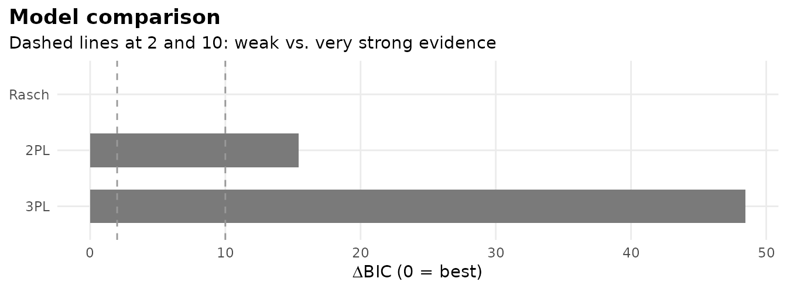
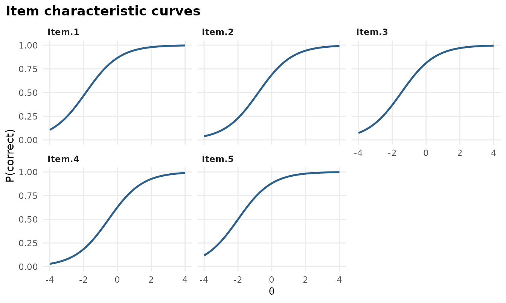
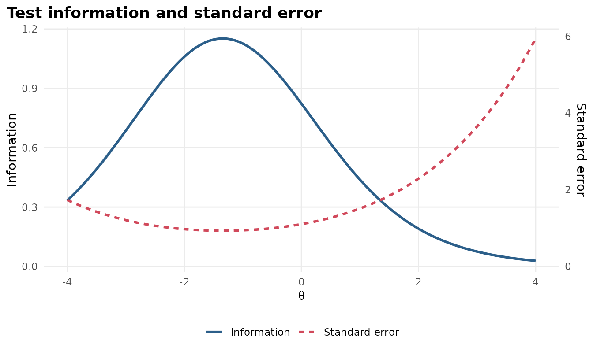
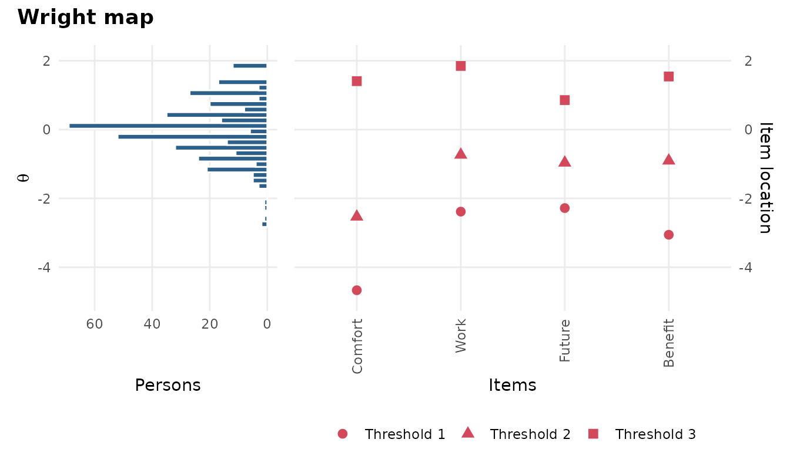
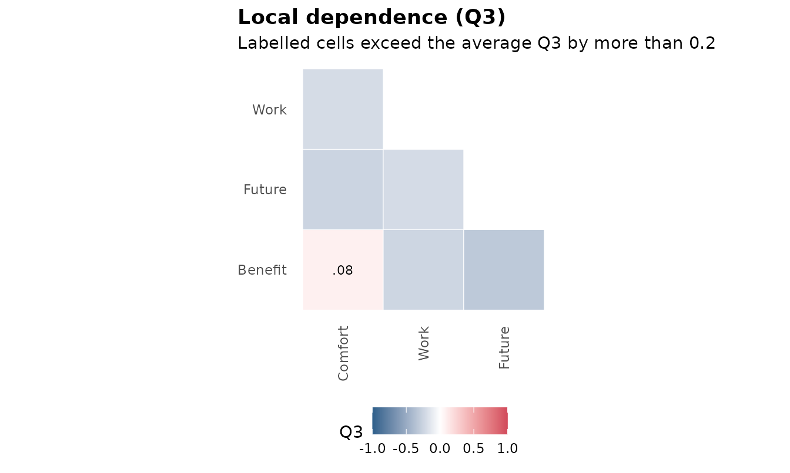
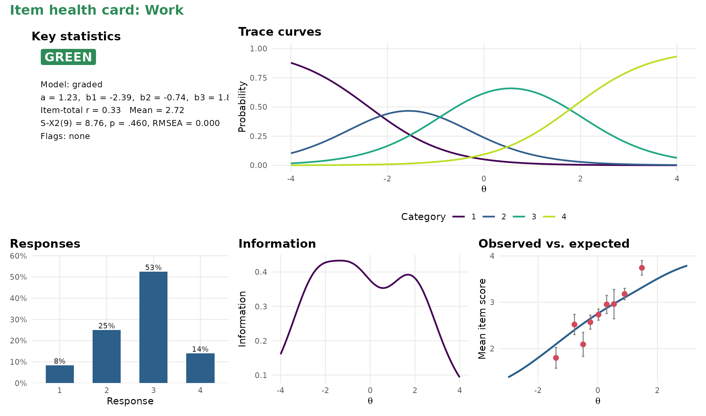

mirtverse sits on top of mirt. mirt does the estimation; mirtverse helps you choose a model, read the results, make figures and share them. Every mirtverse function takes an ordinary mirt model, so you can mix the two packages freely.
1. Let mirtverse pick a model
select_model() fits a set of candidate models and
recommends one. For dichotomous items it compares the Rasch, 2PL and 3PL
models; for polytomous items the partial credit, generalized partial
credit and graded response models.
data <- expand.table(LSAT7)
sel <- select_model(data, verbose = FALSE)
sel
#> mirtverse model selection (ranked by BIC)
#>
#> model npar logLik AIC BIC SABIC RMSEA CFI delta weight
#> Rasch 6 -2664.901 5341.802 5371.248 5352.192 0.040 0.936 0.000 1
#> 2PL 10 -2658.805 5337.610 5386.688 5354.927 0.037 0.968 15.439 0
#> 3PL 15 -2658.055 5346.110 5419.726 5372.085 NA NA 48.478 0
#>
#> The Rasch model is recommended because it has the lowest BIC (5371.2). The
#> runner-up, 2PL, is 15.4 BIC points worse, which is very strong evidence for the
#> Rasch model. Likelihood-ratio test Rasch vs. 2PL: chi-square(4) = 12.19, p =
#> .016; the 2PL model fits significantly better. Likelihood-ratio test Rasch vs.
#> 3PL: chi-square(9) = 13.69, p = .134; the extra parameters of 3PL are not
#> needed. Note the tension: the likelihood-ratio test prefers 2PL, while BIC
#> penalizes extra parameters and prefers Rasch. Choose Rasch if parsimony matters
#> most, or 2PL if fit to these data matters most. AIC would instead select the
#> 2PL model. Absolute fit of the Rasch model: RMSEA = 0.040 (close fit), CFI =
#> 0.936, SRMSR = 0.047.
autoplot(sel)
The recommended model is an ordinary mirt object:
mod <- sel$best2. Read the results in plain language
interpret(mod)
#> Overview
#> --------
#> * A Rasch model with 1 dimension was fitted to 1000 respondents and 5 items
#> (EM estimation).
#> * The estimation converged normally.
#>
#> Model fit
#> ---------
#> * Overall model fit is close: M2 = 23.17, df = 9, RMSEA = 0.040, CFI = 0.936,
#> SRMSR = 0.047.
#> * The chi-square test is significant, but with large samples this is common;
#> the RMSEA indicates the misfit is small in practical terms.
#>
#> Reliability
#> -----------
#> * Marginal reliability is 0.42 (low).
#> * Scores are too imprecise for decisions about individuals; consider adding
#> items or using the scores only for group-level summaries.
#>
#> Targeting
#> ---------
#> * The average item location is -1.33 and the average person score is 0.00, so
#> the test is relatively easy for this group.
#> * Measurement is most precise around theta = -1.36 (information = 1.15, SE =
#> 0.93).
#>
#> Items
#> -----
#> * Low item-total correlation: Item.5 (r = 0.17). These items relate weakly to
#> the rest of the test.
#> * Misfit: Item.2 (S-X2 p = .002). The model does not describe responses to
#> these items well (alpha = 0.01); inspect them with gg_empirical() or
#> item_card().
#>
#> Local dependence
#> ----------------
#> * No item pairs show signs of local dependence (Q3).
#>
#> Person fit
#> ----------
#> * 1.4% of respondents have unusual response patterns (Zh < -1.96), which is
#> within what chance alone would produce.interpret_prompt(mod) packs the same results into a
prompt you can paste into an AI assistant to draft a longer narrative.
Nothing is sent anywhere.
3. Tidy outputs
tidy(), glance() and augment()
return data frames that work with dplyr, gt, flextable or any other
table package.
tidy(mod)
#> # A tibble: 10 × 5
#> item itemtype term estimate std.error
#> <chr> <chr> <chr> <dbl> <dbl>
#> 1 Item.1 Rasch a 1 NA
#> 2 Item.1 Rasch b -1.87 NA
#> 3 Item.2 Rasch a 1 NA
#> 4 Item.2 Rasch b -0.791 NA
#> 5 Item.3 Rasch a 1 NA
#> 6 Item.3 Rasch b -1.46 NA
#> 7 Item.4 Rasch a 1 NA
#> 8 Item.4 Rasch b -0.521 NA
#> 9 Item.5 Rasch a 1 NA
#> 10 Item.5 Rasch b -1.99 NA
glance(mod)
#> # A tibble: 1 × 20
#> nobs nitems nfact itemtype npar logLik AIC BIC SABIC converged method
#> <int> <int> <int> <chr> <int> <dbl> <dbl> <dbl> <dbl> <lgl> <chr>
#> 1 1000 5 1 Rasch 6 -2665. 5342. 5371. 5352. TRUE EM
#> # ℹ 9 more variables: fit_stat <chr>, M2 <dbl>, df <int>, p.value <dbl>,
#> # RMSEA <dbl>, SRMSR <dbl>, CFI <dbl>, TLI <dbl>, reliability <dbl>
head(augment(mod))
#> # A tibble: 6 × 7
#> Item.1 Item.2 Item.3 Item.4 Item.5 .F1 .se_F1
#> <int> <int> <int> <int> <int> <dbl> <dbl>
#> 1 0 0 0 0 0 -1.93 0.712
#> 2 0 0 0 0 0 -1.93 0.712
#> 3 0 0 0 0 0 -1.93 0.712
#> 4 0 0 0 0 0 -1.93 0.712
#> 5 0 0 0 0 0 -1.93 0.712
#> 6 0 0 0 0 0 -1.93 0.712
item_table(mod)
#> # A tibble: 5 × 12
#> item itemtype N mean item_total_r discrimination location S_X2 df
#> <chr> <chr> <int> <dbl> <dbl> <dbl> <dbl> <dbl> <dbl>
#> 1 Item.1 Rasch 1000 0.828 0.246 1 -1.87 5.59 2
#> 2 Item.2 Rasch 1000 0.658 0.247 1 -0.791 12.2 2
#> 3 Item.3 Rasch 1000 0.772 0.313 1 -1.46 8.59 2
#> 4 Item.4 Rasch 1000 0.606 0.223 1 -0.521 8.99 2
#> 5 Item.5 Rasch 1000 0.843 0.175 1 -1.99 4.88 2
#> # ℹ 3 more variables: RMSEA <dbl>, p.value <dbl>, flag <chr>4. Graphics
All graphics are ggplot2 objects, so you can change themes, labels and colours as usual.
gg_trace(mod)
gg_info(mod)

gg_q3(science)
autoplot(mod, type) gives you every plot from one
function: "trace", "expected",
"info", "iteminfo", "se",
"wright", "itemfit", "q3" and
"scores".
5. Item health cards
A one-page summary per item for review meetings, with a traffic-light status.
item_card(science, "Work")
item_cards(mod, file = "cards.html") writes cards for
every item into one page.
6. One-call report
mv_report(sel, file = "lsat7-report.html")The report is a single HTML file with the model comparison, the interpretation, tables, graphics, a sum-score conversion table, item health cards, and the R code to reproduce everything.
7. Share the results with a dashboard
mv_dashboard(mod, title = "LSAT7 results")
export_dashboard(mod, "lsat7-dashboard.html", format = "html")A dashboard lets people who do not use R explore the results: the summary, the item table with health cards, item curves with an ability slider and more. Save it as one HTML file to email, or as a Shiny app to host. See Sharing results with a dashboard.
8. Prefer clicking, or describing the analysis in words?
launch_workbench()
mv_ask("fit a 2PL, check DIF by gender and make a report", data = mydata)The workbench is a point-and-click app that writes the R code for you
(see vignette("workbench")). mv_ask() turns a
plain-language request into a complete, tested script (see the mv_ask() guide).
9. Teaching IRT?
run_lab("model-choice")mirtverse includes interactive labs for measurement courses. Students fit live models and make real testing decisions, from choosing a model to advising a certification board, with feedback on every choice. See Teaching labs for measurement courses.